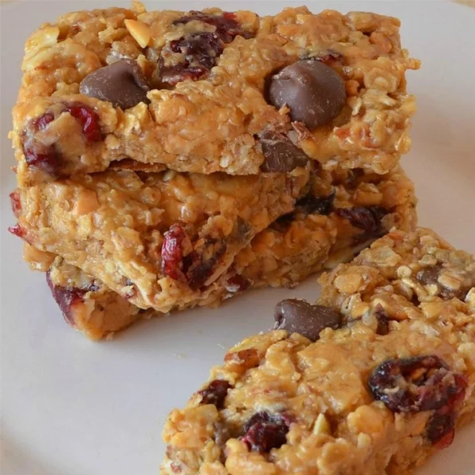

No Bake Granola Bars

Description
Great quick and easy granola bar recipe that kids can make. Perfect to throw in lunches or in your purse for travel. You can also add 1/4 cup wheat germ without changing the consistency. Change up the dried fruit, nuts, and chocolate for different flavors. I generally keep the bars in the refrigerator until I am ready to eat them, but these keep well to take to work or school.
Prep:
10 mins
Additional:
1 hr
Total:
1 hr 10 mins
Servings:
12
Yields:
12 bars
Ingredients
- 2 cups rolled oats
- 1¼ cups chunky natural peanut butter
- 1 cup ground flaxseed
- ¾ cup honey
- ¾ cup dried cranberries
- ½ cup chocolate chips
- ¼ cup sliced almonds
Steps
-
Stir oats, peanut butter, flaxseed, honey, cranberries, chocolate chips, and almonds together in a bowl; press into a 9x11-inch baking dish, using the back of a spatula to press into a flat layer.
-
Refrigerate mixture at least 1 hour.
-
Cut into 12 bars and wrap each individually in plastic wrap for storage.